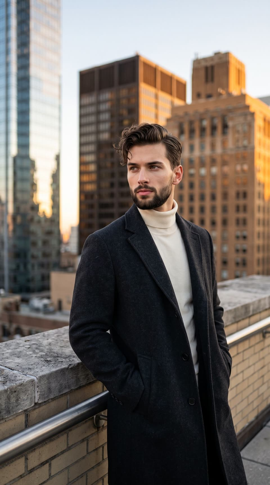

Nano Banana 2.1 menswear editorial: a charcoal wool overcoat over a cream ribbed turtleneck at golden hour
WRD-050WardrobeNano Banana 2.1 (Gemini app)by @pictsbyai2026-10-25

A long single-paragraph portrait prompt that describes the garments as lighting surfaces: how 45-degree golden-hour side light falls across the cream turtleneck and the folds of the dark coat, the pose that pulls the coat edges forward, and the rooftop parapet materials.
Prompt
A candid, medium-full editorial photograph of a confident young handsome male model with a chiselled bone structure and sharp jawline, captured in a thoughtful gaze looking away toward the upper left horizon on an outdoor high-rise urban rooftop terrace during the golden hour, framed in a 9:16 aspect ratio. He stands with an asymmetrical, natural posture, his body turned at a 45-degree angle, with both hands casually inserted into the pockets of his tailored charcoal wool overcoat, slightly pulling the coat's edges forward. He wears a high-contrast cream, ribbed turtleneck sweater that frames his neck, partially visible under the heavy, textured dark overcoat. His medium-short, dark brown hair is styled in a classic cut, swept back and to the left with natural, wavy volume, featuring loose flyaway curls on his left forehead and a matte finish. Natural 45-degree side lighting from the low, golden-hour sun on the camera's left illuminates his left cheekbone, nose bridge, brow ridge, and the cream turtleneck, while casting soft, gradual shadow edges across the right side of his face, neck, and the folds of his dark coat, with a gentle, cool sky-blue fill on the shadow side. He is positioned center-right, leaning near a foreground rooftop parapet wall that features weathered gray stone coping, a tan brick base with recessed mortar joints, and a brushed steel tubular handrail. The background, captured with a shallow depth of field, blurs into a deep, creamy bokeh of an urban skyline, balanced on the far left by a tall, modern glass skyscraper reflecting the warm golden sunset, alongside aged mid-century commercial towers with boxy dark brown and terracotta tan masonry facades catching the orange sunlight. The cinematic image, characteristic of a classic menswear luxury campaign, boasts tack-sharp detail on the subject against the soft, warm golden-hour atmosphere, retaining a rich color profile of charcoal, soft sky blue-gray, cream, and warm amber, shot straight on with the characteristic natural clarity of a full-frame digital camera using an 85mm lens at f/2.0, with preserved shadow details in the wool fabric and natural skin textures.
Our Seedance 2.5 adaptation
[ADAPTED for Seedance 2.5 by Grok Bot; not the creator's prompt. Follows the official BytePlus Seedance 2.5 prompt guide and its official sd25-pe prompt-optimizer skill: parameters only on the API line (not in the prompt body), subject + action + scene, then visuals, camera (move, subject, start, direction, arrival) and sound; only the source's own exclusions are kept.] API: duration 8, ratio 9:16, resolution 1080p, generate_audio true. A man in his late twenties with short, swept-back dark-brown hair stands on a high-rise rooftop terrace at golden hour, hands in the pockets of a tailored charcoal wool overcoat worn over a cream ribbed turtleneck, body turned 45 degrees, leaning near a weathered stone parapet. He looks away toward the upper left, then turns his head slowly back toward the city. Low golden sun from the camera's left lights his cheekbone, the cream turtleneck and the coat's folds; soft shadow edges on the right side of his face with a cool sky-blue fill; city towers soft behind him. Charcoal, sky blue-grey, cream and warm amber palette; natural skin and wool texture. The camera starts medium-full at eye level and pushes in slowly to a waist-up shot as he turns. Sound: <light rooftop wind> <distant city hum>.
Tags: menswear, wool overcoat, ribbed turtleneck, golden hour side light, rooftop, editorial portrait